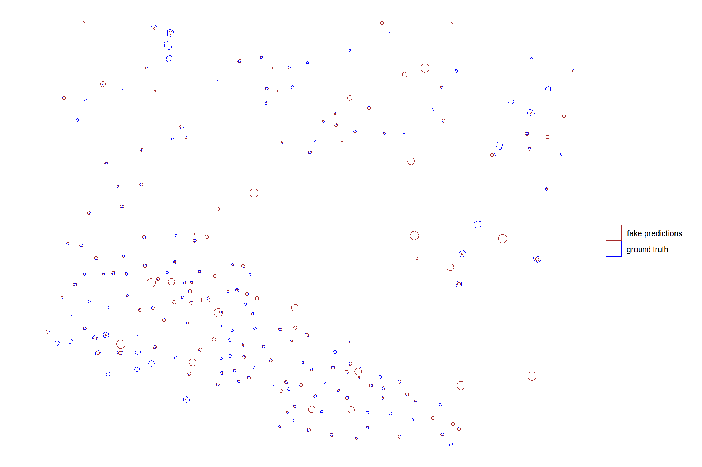
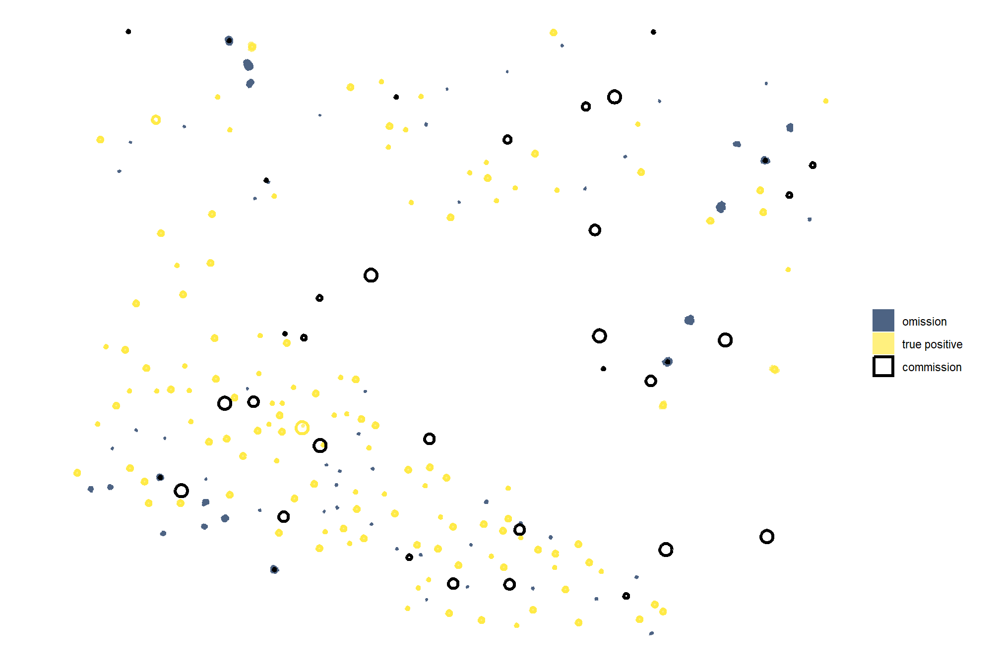

Section 3 Method Evaluation
This section is entirely devoted to detailing the methods and defining analysis functions for instance matching and the calculation of overall prediction performance assessment metrics. Field-measured slash piles will be used as the ground truth data to perform a confusion matrix-based validation accuracy assessment of the methods.
Instance matching compares predictions to the ground truth data to establish True Positives (TP), False Positives (FP, commissions), and False Negatives (FN, omissions). Aggregation of the instance matching results allows us to calculate overall performance assessment metrics to determine overall detection accuracy and, in the case of our slash pile analysis, form quantification accuracy.
- detection accuracy metrics: such as Recall, Precision, and F-score, are calculated directly by aggregating these raw TP, FP, and FN counts and quantifies the method’s ability to find the piles
- quantification accuracy metrics: such as RMSE, MAPE, and Mean Error of pile form measurements (e.g. height, diameter) are calculated by aggregating the differences between the estimated pile attributes and the ground truth values for instances classified as True Positives. These metrics tell us about the method’s ability to accurately quantify the form of the piles it successfully identified
3.1 Instance Matching
Puliti et al. (2023, p. 14) provide guidance on performing “instance segmentation evaluation” to assess the ability of a method to correctly identify and delineate individual tree crown instances compared ground truth data. We’ll use this same methodology to test our slash pile identification approach.
The first step in performing any instance segmentation evaluation is to match the point cloud reference and predicted instance IDs. To do this, it is necessary to define whether a prediction is correct. Here we adopt a method Wielgosz et al. (2023) proposed for matching tree instance IDs from two point clouds with reference and predicted instance IDs, respectively. Given a reference and a predicted point cloud with two separate sets of instances, the tree instances are iteratively matched in descending order from the tallest to the shortest trees by using the following algorithm:
- Find the tallest tree in the reference data;
- Find the tree in the predicted instances that have the largest intersection over union (IoU) with the tree selected in the previous step;
- if the IoU is <0.5: the predicted tree is considered an error, and thus no reference instance ID is available;
- if the IoU is ≥0.5: the tree is considered a correct match, and assign reference instance ID label to the predicted tree;
- Add to collection (dictionary) of predicted tree instances with IDs matching the reference instance IDs.
Following the initial matching of reference and predicted instance IDs, the evaluation can be done on the tree level to evaluate detection, omission, and commission rates (which can be used to calculate precision, recall, and the F-score metric)
# check the data
check_gt_str <- function(
gt_inst
, gt_id = "pile_id"
, predictions
, pred_id = "pred_pile_id"
) {
if( !inherits(gt_inst,"sf")){stop("ground truth must be spatial `sf` data with a single record")}
if( !inherits(predictions,"sf") ){stop("predictions must be spatial `sf` data")}
if( !identical(sf::st_crs(gt_inst),sf::st_crs(predictions)) ){stop("`sf` data should have same crs projection")}
if( is.null(gt_id) || is.na(gt_id) ||
!inherits(gt_id, "character") ||
stringr::str_trim(gt_id) == ""
){
stop("ground truth data must contain `gt_id` column")
}
if( is.null(pred_id) || is.na(pred_id) ||
!inherits(pred_id, "character") ||
stringr::str_trim(pred_id) == ""
){
stop("ground truth data must contain `pred_id` column")
}
if( !(names(gt_inst) %>% stringr::str_equal(gt_id) %>% any()) ){stop("ground truth data must contain `gt_id` column")}
# get rid of gt_id if it exists in the predictions and is not the key
if(
(names(predictions) %>% stringr::str_equal(gt_id) %>% any() )
&& (gt_id!=pred_id)
){
predictions <- predictions %>%
# throw in hey_xxxxxxxxxx to test it works if we include non-existant columns
dplyr::select( -dplyr::any_of(c(
"hey_xxxxxxxxxx"
, gt_id
)))
}
# rename it if gt_id==pred_id
if(
(names(predictions) %>% stringr::str_equal(gt_id) %>% any() )
&& (gt_id==pred_id)
){
predictions <- predictions %>%
dplyr::rename_with(
.cols = dplyr::all_of(gt_id)
, .fn = function(x){"prediction_idxxx"}
)
pred_id <- "prediction_idxxx"
}else if( !(names(predictions) %>% stringr::str_equal(pred_id) %>% any()) ){
stop("predictions data must contain `pred_id` column")
}
return(list(
predictions = predictions
, pred_id = pred_id
))
}
# match the instance
ground_truth_single_match <- function(
gt_inst
, gt_id = "pile_id"
, predictions
, pred_id = "pred_pile_id"
, min_iou_pct = 0.5
) {
# check it
check_ans <- check_gt_str(
gt_inst = gt_inst
, gt_id = gt_id
, predictions = predictions
, pred_id = pred_id
)
if(nrow(gt_inst)!=1 ){stop("ground truth must be spatial `sf` data with a single record")}
predictions <- check_ans$predictions
pred_id <- check_ans$pred_id
# intersection
i_temp <-
sf::st_intersection(predictions,gt_inst) %>%
dplyr::mutate(i_area = sf::st_area(.) %>% as.numeric())
if(nrow(i_temp)==0){return(NULL)}
# union
u_temp <-
i_temp %>%
sf::st_drop_geometry() %>%
dplyr::inner_join(predictions %>% sf::st_set_geometry("geom1"), by = pred_id) %>%
dplyr::inner_join(gt_inst %>% sf::st_set_geometry("geom2") %>% dplyr::select(dplyr::all_of(gt_id)), by = gt_id) %>%
dplyr::rowwise() %>%
dplyr::mutate(
u_area = sf::st_union(geom1, geom2) %>% sf::st_area() %>% as.numeric()
) %>%
dplyr::ungroup() %>%
dplyr::select(-c(geom1,geom2)) %>%
sf::st_drop_geometry() %>%
dplyr::mutate(
iou = dplyr::case_when(
is.na(u_area) | is.nan(u_area) ~ NA
, T ~ dplyr::coalesce(i_area,0)/u_area
)
) %>%
dplyr::filter(!is.na(iou) & iou>=min_iou_pct)
if(nrow(u_temp)==0){return(NULL)}
# return
return(
u_temp %>%
# pick the highest iou
dplyr::arrange(desc(iou)) %>%
dplyr::slice(1) %>%
# column clean
dplyr::select(dplyr::all_of(
c(
gt_id, "i_area", "u_area", "iou"
, base::setdiff(
names(predictions)
, c("geometry", "geom", gt_id, "i_area", "u_area", "iou")
)
)
))
)
}let’s generate some fake predictions to test
predictions_temp <-
slash_piles_polys %>%
dplyr::slice_sample(prop = 0.7) %>%
sf::st_centroid() %>%
dplyr::mutate(rand=as.integer(runif(n=dplyr::n(), min = 1, max = 3))) %>%
dplyr::select(rand,pile_id) %>%
sf::st_set_geometry("geometry") %>%
dplyr::mutate(
geometry = sf::st_buffer(geometry, rand)
) %>%
sf::st_set_geometry("geometry") %>%
dplyr::bind_rows(
sf::st_sample(
slash_piles_polys %>%
sf::st_bbox() %>%
sf::st_as_sfc() %>%
sf::st_as_sf()
, size = 33
, type = "random"
) %>%
sf::st_as_sf() %>%
dplyr::mutate(rand=as.integer(runif(n=dplyr::n(), min = 1, max = 6))) %>%
dplyr::select(rand) %>%
sf::st_set_geometry("geometry") %>%
dplyr::mutate(
geometry = sf::st_buffer(geometry, rand)
) %>%
sf::st_set_geometry("geometry")
) %>%
dplyr::mutate(pred_id = dplyr::row_number() %>% as.character()) %>%
dplyr::select(pred_id,pile_id) # storing the pile_id so we know which ones might be matchescheck out the fake predictions compared to the ground truth pile footprints
ggplot2::ggplot() +
ggplot2::geom_sf(data = slash_piles_polys, mapping = ggplot2::aes(color = "ground truth"), fill = NA) +
ggplot2::geom_sf(data = predictions_temp, mapping = ggplot2::aes(color = "fake predictions"), fill = NA) +
ggplot2::scale_color_manual(values=c("brown","blue")) +
ggplot2::labs(color="") +
ggplot2::theme_void()
test for a single ground truth instance
ground_truth_single_match(
gt_inst = slash_piles_polys %>% dplyr::filter(pile_id==purrr::discard(predictions_temp$pile_id, is.na)[1])
, gt_id = "pile_id"
, predictions = predictions_temp
, pred_id = "pred_id"
, min_iou_pct = 0.01
)## # A tibble: 1 × 5
## pile_id i_area u_area iou pred_id
## <dbl> <dbl> <dbl> <dbl> <chr>
## 1 67 10.6 13.2 0.799 1now we need to make a function that matches the instances iteratively allowing for only a single match from the predictions (i.e. one prediction can only go to one ground truth instance), and returns all instances labeled as true positive (correctly matched with a prediction), commission (predictions which do not match a ground truth instance; false positive), or omission (ground truth instances for which no predictions match; false negative)
ground_truth_prediction_match <- function(
# ground_truth should be sorted already
ground_truth
, gt_id = "pile_id"
# predictions just needs treeID
, predictions
, pred_id = "pred_pile_id"
, min_iou_pct = 0.5
) {
# check it
check_ans <- check_gt_str(
gt_inst = ground_truth
, gt_id = gt_id
, predictions = predictions
, pred_id = pred_id
)
predictions <- check_ans$predictions
pred_id <- check_ans$pred_id
# set up a blank data frame
return_df <-
dplyr::tibble(
i_area = as.numeric(NA)
, u_area = as.numeric(NA)
, iou = as.numeric(NA)
) %>%
dplyr::bind_cols(
ground_truth %>%
sf::st_drop_geometry() %>%
dplyr::select(dplyr::all_of(gt_id)) %>%
dplyr::slice(0)
) %>%
dplyr::bind_cols(
predictions %>%
sf::st_drop_geometry() %>%
dplyr::select(dplyr::all_of(pred_id)) %>%
dplyr::slice(0)
) %>%
dplyr::relocate(tidyselect::starts_with(gt_id))
# save names to select
nms_temp <- names(return_df)
# start with tallest tree and match to get true positives
for (i in 1:nrow(ground_truth)) {
match_temp <- ground_truth_single_match(
gt_inst = ground_truth %>% dplyr::slice(i)
, gt_id = gt_id
, predictions = predictions %>% dplyr::select(dplyr::all_of(pred_id)) %>% dplyr::anti_join(return_df,by=pred_id)
, pred_id = pred_id
, min_iou_pct = min_iou_pct
)
# add to return
if(!is.null(match_temp)){
return_df <- return_df %>%
dplyr::bind_rows(match_temp %>% dplyr::select(nms_temp))
}
match_temp <- NULL
}
# label tps
return_df <- return_df %>%
dplyr::mutate(match_grp = "true positive")
# add omissions
return_df <-
return_df %>%
dplyr::bind_rows(
ground_truth %>%
sf::st_drop_geometry() %>%
dplyr::anti_join(return_df,by=gt_id) %>%
dplyr::select(dplyr::all_of(gt_id)) %>%
dplyr::mutate(match_grp = "omission")
)
# add commissions
return_df <-
return_df %>%
dplyr::bind_rows(
predictions %>%
sf::st_drop_geometry() %>%
dplyr::anti_join(return_df,by=pred_id) %>%
dplyr::select(dplyr::all_of(pred_id)) %>%
dplyr::mutate(match_grp = "commission")
)
# make match_grp factor
return_df <- return_df %>%
dplyr::mutate(
match_grp = factor(
match_grp
, ordered = T
, levels = c(
"true positive"
, "commission"
, "omission"
)
) %>% forcats::fct_rev()
)
# return
if(nrow(return_df)==0){
warning("no records found for ground truth to predition matching")
return(NULL)
}else{
return(return_df)
}
}let’s see how we did given the full list of fake predictions and ground truth data
ground_truth_prediction_match_ans <- ground_truth_prediction_match(
ground_truth = slash_piles_polys %>%
dplyr::arrange(desc(field_diameter_m)) # this is so the algorithm starts with the largest
, gt_id = "pile_id"
, predictions = predictions_temp
, pred_id = "pred_id"
, min_iou_pct = 0.1
)
# huh?
ground_truth_prediction_match_ans %>% dplyr::glimpse()## Rows: 223
## Columns: 6
## $ pile_id <dbl> 197, 189, 132, 111, 131, 42, 144, 169, 180, 128, 136, 135, 6…
## $ i_area <dbl> 12.560629, 12.560629, 12.011957, 11.787696, 11.131328, 3.048…
## $ u_area <dbl> 38.611505, 30.782327, 14.863479, 12.670969, 12.691045, 3.986…
## $ iou <dbl> 0.3253079, 0.4080468, 0.8081524, 0.9302916, 0.8771009, 0.764…
## $ pred_id <chr> "36", "115", "54", "112", "110", "84", "109", "42", "61", "8…
## $ match_grp <ord> true positive, true positive, true positive, true positive, …how did our predictions do for this test example?
# what did we get?
ground_truth_prediction_match_ans %>%
dplyr::count(match_grp) %>%
dplyr::mutate(pct = (n/sum(n)) %>% scales::percent(accuracy=0.1))## # A tibble: 3 × 3
## match_grp n pct
## <ord> <int> <chr>
## 1 omission 60 26.9%
## 2 commission 36 16.1%
## 3 true positive 127 57.0%let’s look at that spatially
pal_match_grp = c(
"omission"=viridis::cividis(3)[1]
, "commission"= "black" #viridis::cividis(3)[2]
, "true positive"=viridis::cividis(3)[3]
)
# plot it
ggplot2::ggplot() +
ggplot2::geom_sf(
data =
slash_piles_polys %>%
dplyr::left_join(
ground_truth_prediction_match_ans %>%
dplyr::select(pile_id,match_grp)
, by = "pile_id"
)
, mapping = ggplot2::aes(fill = match_grp)
, color = NA ,alpha=0.7
) +
ggplot2::geom_sf(
data =
predictions_temp %>%
dplyr::left_join(
ground_truth_prediction_match_ans %>%
dplyr::select(pred_id,match_grp)
, by = "pred_id"
)
, mapping = ggplot2::aes(fill = match_grp, color = match_grp)
, alpha = 0
, lwd = 1.1
) +
ggplot2::scale_fill_manual(values = pal_match_grp, name = "") +
ggplot2::scale_color_manual(values = pal_match_grp, name = "") +
ggplot2::theme_void() +
ggplot2::guides(
fill = ggplot2::guide_legend(override.aes = list(color = c(NA,NA,pal_match_grp["commission"])))
, color = "none"
)
let’s quickly look at the IoU values on the true positives
## iou
## Min. :0.1136
## 1st Qu.:0.4429
## Median :0.5109
## Mean :0.5240
## 3rd Qu.:0.6081
## Max. :0.9303
## NA's :963.2 Detection Accuracy Metrics
Detection accuracy metrics are calculated by aggregating raw TP, FP, and FN counts to quantify the method’s ability to find the piles. Aggregation of the instance matching allows us to evaluate omission rate (false negative rate or miss rate), commission rate (false positive rate), precision, recall (detection rate), and the F-score metric. As a reminder, true positive (\(TP\)) instances correctly match ground truth instances with a prediction, commission tree predictions do not match a ground truth tree (false positive; \(FP\)), and omissions are ground truth instances for which no predictions match (false negative; \(FN\))
\[\textrm{omission rate} = \frac{FN}{TP+FN}\]
\[\textrm{commission rate} = \frac{FP}{TP+FP}\]
\[\textrm{precision} = \frac{TP}{TP+FP}\]
\[\textrm{recall} = \frac{TP}{TP+FN}\]
\[ \textrm{F-score} = 2 \times \frac{\bigl(precision \times recall \bigr)}{\bigl(precision + recall \bigr)} \]
let’s make a function to calculate these detection accuracy metrics based on aggregated TP, FP, and FN counts
# first function takes df with cols tp_n, fp_n, and fn_n to calculate rates
confusion_matrix_scores_fn <- function(df) {
df %>%
dplyr::mutate(
omission_rate = dplyr::case_when(
dplyr::coalesce(tp_n,0) == 0 & dplyr::coalesce(fn_n,0) == 0 ~ 0 # if there are no actual piles, there is nothing to miss
, dplyr::coalesce(tp_n,0) == 0 & dplyr::coalesce(fn_n,0) > 0 ~ 1 # every single actual pile was missed
, dplyr::coalesce(fn_n,0) == 0 & dplyr::coalesce(tp_n,0) > 0 ~ 0
, T ~ fn_n/(tp_n+fn_n)
) # False Negative Rate or Miss Rate
, commission_rate = dplyr::case_when(
dplyr::coalesce(tp_n,0) == 0 & dplyr::coalesce(fp_n,0) == 0 ~ 0 # if no predictions are made, the model could not have made any commission errors
, dplyr::coalesce(fp_n,0) == 0 & dplyr::coalesce(tp_n,0) > 0 ~ 0
, T ~ fp_n/(tp_n+fp_n)
) # False Positive Rate
, precision = dplyr::case_when(
dplyr::coalesce(tp_n,0) == 0 & dplyr::coalesce(fp_n,0) == 0 ~ 1 # if no predictions are made, the model made zero incorrect positive claims
, dplyr::coalesce(tp_n,0) == 0 & dplyr::coalesce(fp_n,0) > 0 ~ 0
, T ~ tp_n/(tp_n+fp_n)
)
, recall = dplyr::case_when(
dplyr::coalesce(tp_n,0) == 0 & dplyr::coalesce(fn_n,0) == 0 ~ 1 # if there are no actual piles, there is nothing to miss
, dplyr::coalesce(tp_n,0) == 0 & dplyr::coalesce(fn_n,0) > 0 ~ 0 # every single actual pile was missed
, T ~ tp_n/(tp_n+fn_n)
)
, f_score = dplyr::case_when(
dplyr::coalesce(precision,0) == 0 | dplyr::coalesce(recall,0) == 0 ~ 0
, T ~ 2 * ( (precision*recall)/(precision+recall) )
)
)
}test it
ground_truth_prediction_match_ans %>%
dplyr::ungroup() %>%
dplyr::count(match_grp) %>%
dplyr::mutate(
match_grp = dplyr::case_match(
match_grp
, "true positive"~"tp"
, "commission"~"fp"
, "omission"~"fn"
)
) %>%
tidyr::pivot_wider(
names_from = match_grp
, values_from = c(n)
, names_glue = "{match_grp}_{.value}"
) %>%
confusion_matrix_scores_fn() ## # A tibble: 1 × 8
## fn_n fp_n tp_n omission_rate commission_rate precision recall f_score
## <int> <int> <int> <dbl> <dbl> <dbl> <dbl> <dbl>
## 1 60 36 127 0.321 0.221 0.779 0.679 0.7263.3 Quantification Accuracy Metrics
Quantification accuracy metrics such as RMSE, MAPE, and Mean Error of pile form measurements (e.g. height, diameter) are calculated by aggregating the differences between the estimated pile attributes and the ground truth values for instances classified as True Positives. These metrics tell us about the method’s ability to accurately quantify the form of the piles it successfully identified
to prepare our results for analysis, we will develop a function that aggregates the single-pile-level data into a single record for each parameter combination. this function will calculate detection performance metrics such as F-score, precision, and recall (using the confusion_matrix_scores_fn() we defined above), as well as quantification accuracy metrics including Root Mean Squared Error (RMSE), Mean Error (ME), and Mean Absolute Percentage Error (MAPE) to assess the accuracy of our pile form measurements. this could be a valuable function for any future analysis comparing predictions to ground truth data.
here are the quantification accuracy metric formulas:
\[ \textrm{RMSE} = \sqrt{ \frac{ \sum_{i=1}^{N} (y_{i} - \hat{y_{i}})^{2}}{N}} \]
\[ \textrm{ME} = \frac{ \sum_{i=1}^{N} (\hat{y_{i}} - y_{i})}{N} \]
\[ \textrm{MAPE} = \frac{1}{N} \sum_{i=1}^{N} \left| \frac{y_{i} - \hat{y_{i}}}{y_{i}} \right| \]
Where \(N\) is equal to the total number of correctly matched piles, \(y_i\) is the ground truth measured value and \(\hat{y_i}\) is the predicted value of \(i\)
we could also calculate Relative RMSE (RRMSE)
\[ \textrm{RRMSE} = \frac{\text{RMSE}}{\bar{y}} \times 100\% \]
where, \(\bar{y}\) represents the mean of the ground truth values. the interpretations of RMSE and RRMSE are:
- RMSE: Measures the average magnitude of the differences between predicted and the actual observed values, expressed in the same units as the metric.
- RRMSE: Expresses RMSE as a percentage of the mean of the observed values, providing a scale-independent measure to compare model accuracy across different datasets or models.
for this analysis, we’ll show how to calculate RRMSE but we’ll only investigate MAPE
- Use MAPE when: You need an easily understandable metric for comparing prediction accuracy across different series or models with varying scales, particularly when zeros or near-zero actual values are not present in your data.
- Use RRMSE when: You need a metric that is more robust to small or zero actual values and you want to penalize larger errors more heavily due to the squaring of errors in its calculation.
# aggregate results from ground_truth_prediction_match()
agg_ground_truth_match <- function(ground_truth_prediction_match_ans) {
if(nrow(ground_truth_prediction_match_ans)==0){return(NULL)}
if( !(names(ground_truth_prediction_match_ans) %>% stringr::str_equal("match_grp") %>% any()) ){stop("ground_truth_prediction_match_ans must contain `match_grp` column")}
# check for difference columns (contains "_diff") and calc rmse for only those to return a single line df with colums for each diff_rmse
if(
(ground_truth_prediction_match_ans %>%
dplyr::select(tidyselect::starts_with("diff_") | tidyselect::starts_with("pct_diff_")) %>%
ncol() )>0
){
# get rmse and mean difference/error for all columns with "_diff" but not "pct_diff"
# get mape for all columns with "pct_diff" but not "diff_"
rmse_df <- ground_truth_prediction_match_ans %>%
dplyr::ungroup() %>%
dplyr::select(
tidyselect::starts_with("diff_")
| tidyselect::starts_with("pct_diff_")
) %>%
tidyr::pivot_longer(dplyr::everything(), values_drop_na = T) %>%
dplyr::group_by(name) %>%
dplyr::summarise(
sq = sum(value^2, na.rm = T)
, mean = mean(value, na.rm = T)
, sumabs = sum(abs(value), na.rm = T)
, nomiss = sum(!is.na(value))
) %>%
dplyr::ungroup() %>%
dplyr::mutate(
rmse = dplyr::case_when(
dplyr::coalesce(nomiss,0)==0 ~ as.numeric(NA)
, T ~ sqrt(sq/nomiss)
)
, mape = dplyr::case_when(
dplyr::coalesce(nomiss,0)==0 ~ as.numeric(NA)
, T ~ sumabs/nomiss
)
) %>%
# NA nonsense values
dplyr::mutate(
mape = dplyr::case_when(
stringr::str_starts(name, "pct_diff_") ~ mape
, T ~ as.numeric(NA)
)
, rmse = dplyr::case_when(
stringr::str_starts(name, "pct_diff_") ~ as.numeric(NA)
, T ~ rmse
)
, mean = dplyr::case_when(
stringr::str_starts(name, "pct_diff_") ~ as.numeric(NA)
, T ~ mean
)
) %>%
dplyr::select(name,rmse,mean,mape) %>%
tidyr::pivot_wider(
names_from = name
, values_from = c(rmse,mean,mape)
, names_glue = "{name}_{.value}"
) %>%
# remove columns with NA in all rows
dplyr::select( dplyr::where( ~!all(is.na(.x)) ) )
if(
dplyr::coalesce(nrow(rmse_df),0)==0
|| dplyr::coalesce(ncol(rmse_df),0)==0
){
# empty df
rmse_df <- dplyr::tibble()
}
}else{
# empty df
rmse_df <- dplyr::tibble()
}
# count by match group
agg <-
ground_truth_prediction_match_ans %>%
dplyr::ungroup() %>%
dplyr::count(match_grp) %>%
dplyr::mutate(
match_grp = dplyr::case_match(
match_grp
, "true positive"~"tp"
, "commission"~"fp"
, "omission"~"fn"
)
)
# true positive, false positive, false negative rates
return_df <- dplyr::tibble(match_grp = c("tp","fp","fn")) %>%
dplyr::left_join(agg, by = "match_grp") %>%
dplyr::mutate(dplyr::across(.cols = c(n), .fn = ~dplyr::coalesce(.x,0))) %>%
tidyr::pivot_wider(
names_from = match_grp
, values_from = c(n)
, names_glue = "{match_grp}_{.value}"
)
# rates, precision, recall, f-score
return_df <- confusion_matrix_scores_fn(return_df)
# add rmse
if(nrow(rmse_df)>0){
return_df <- return_df %>% dplyr::bind_cols(rmse_df)
}
# return
return(return_df)
}There is a lot going on in our agg_ground_truth_match() function but it’s application is straightforward enough:
- The minimum required input is a data frame of the raw instance matches with a column named
match_grpwhich is string/factor with the levels “true positive”, “commission”, and “omission” as returned by theground_truth_prediction_match()function - Optionally, if the data contain columns with the prefix “diff_” the mean error (ME) is calculated for those columns with the return having the suffix “_mean” and the RMSE is calculated for those columns with the return having the suffix “_rmse”
- interpretation of the ME is enhanced if these “diff_” columns are calculated as the predicted value minus the actual value (e.g.
pred_diameter_m - gt_diameter_m)
- interpretation of the ME is enhanced if these “diff_” columns are calculated as the predicted value minus the actual value (e.g.
- Optionally, if the data contain columns with the prefix “pct_diff_” the mean absolute percent error (MAPE) is calculated for those columns with the return having the suffix “_mape”
- these “pct_diff_” columns are calculated as the actual value minus the predicted value divided by the actual value (e.g.
(gt_diameter_m - pred_diameter_m)/gt_diameter_m)
- these “pct_diff_” columns are calculated as the actual value minus the predicted value divided by the actual value (e.g.
first, let’s look at the agg_ground_truth_match() return using an example minimum required input data frame of the raw instance matches with a column named match_grp which is string/factor with the levels “true positive”, “commission”, and “omission”
dplyr::tibble(
match_grp = c(
rep("true positive", times = 9)
, rep("commission", times = 2)
, rep("omission", times = 4)
)
) %>%
agg_ground_truth_match() %>%
dplyr::glimpse()## Rows: 1
## Columns: 8
## $ tp_n <dbl> 9
## $ fp_n <dbl> 2
## $ fn_n <dbl> 4
## $ omission_rate <dbl> 0.3076923
## $ commission_rate <dbl> 0.1818182
## $ precision <dbl> 0.8181818
## $ recall <dbl> 0.6923077
## $ f_score <dbl> 0.75now, let’s look at the agg_ground_truth_match() output using our fake pile prediction instance match example made by our ground_truth_prediction_match() function as input.
Before agg_ground_truth_match(), we’ll add area of the fake predicted piles and area of the ground truth piles to ensure we get RMSE, MAPE, and ME quantification accuracy metrics in the result
# first, we'll add pile area from the respective spatial data
ground_truth_prediction_match_ans <- ground_truth_prediction_match_ans %>%
# join on gt area data
dplyr::left_join(
slash_piles_polys %>%
dplyr::select(pile_id) %>%
dplyr::mutate(gt_area_m2 = sf::st_area(.) %>% as.numeric()) %>%
sf::st_drop_geometry()
, by = "pile_id"
) %>%
# join on pred area data
dplyr::left_join(
predictions_temp %>%
dplyr::select(pred_id) %>%
dplyr::mutate(pred_area_m2 = sf::st_area(.) %>% as.numeric()) %>%
sf::st_drop_geometry()
, by = "pred_id"
) %>%
# calculate difference columns
dplyr::mutate(
diff_area_m2 = pred_area_m2-gt_area_m2
, pct_diff_area_m2 = (gt_area_m2-pred_area_m2)/gt_area_m2
)
# agg_ground_truth_match()
agg_ground_truth_match(ground_truth_prediction_match_ans) %>%
dplyr::glimpse()## Rows: 1
## Columns: 11
## $ tp_n <dbl> 127
## $ fp_n <dbl> 36
## $ fn_n <dbl> 60
## $ omission_rate <dbl> 0.3208556
## $ commission_rate <dbl> 0.2208589
## $ precision <dbl> 0.7791411
## $ recall <dbl> 0.6791444
## $ f_score <dbl> 0.7257143
## $ diff_area_m2_rmse <dbl> 9.738452
## $ diff_area_m2_mean <dbl> 0.7120349
## $ pct_diff_area_m2_mape <dbl> 0.7468178the agg_ground_truth_match() allows for multiple “diff_” and “pct_diff_” columns to aggregate quantification accuracy metrics for different measurements
ground_truth_prediction_match_ans %>%
dplyr::mutate(
# fake one
pred_other_measurement = runif(n=dplyr::n(),min = 1, max = 11)
, pred_other_measurement = ifelse(is.na(pred_id),NA,pred_other_measurement)
# fake one
, gt_other_measurement = runif(n=dplyr::n(),min = 3, max = 13)
, gt_other_measurement = ifelse(is.na(pile_id),NA,gt_other_measurement)
) %>%
# calculate difference columns
dplyr::mutate(
diff_other_measurement = pred_other_measurement-gt_other_measurement
, pct_diff_other_measurement = (gt_other_measurement-pred_other_measurement)/gt_other_measurement
) %>%
agg_ground_truth_match() %>%
dplyr::glimpse()## Rows: 1
## Columns: 14
## $ tp_n <dbl> 127
## $ fp_n <dbl> 36
## $ fn_n <dbl> 60
## $ omission_rate <dbl> 0.3208556
## $ commission_rate <dbl> 0.2208589
## $ precision <dbl> 0.7791411
## $ recall <dbl> 0.6791444
## $ f_score <dbl> 0.7257143
## $ diff_area_m2_rmse <dbl> 9.738452
## $ diff_other_measurement_rmse <dbl> 4.41821
## $ diff_area_m2_mean <dbl> 0.7120349
## $ diff_other_measurement_mean <dbl> -1.915537
## $ pct_diff_area_m2_mape <dbl> 0.7468178
## $ pct_diff_other_measurement_mape <dbl> 0.5199562